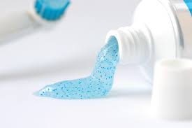

Use reusable produce bags
About 1 million plastic bags are used every minute, and a single plastic bag can take 1,000 years to degrade. If you’re already bringing reusable bags to the grocery store, you’re on the right track, but if you’re still using plastic produce bags, it’s time to make a change.

Reduce, reuse and recycle plastic
Reduce your use of plastics, reuse plastic products whenever possible, recycle all of the rubbish you can!

Watch out for toiletries that contain micro-beads
These small plastic beads are found in some facial products, soaps, shower gels and toothpastes. They are very small so can’t be effectively filtered from waste before it enters rivers, lakes or oceans.